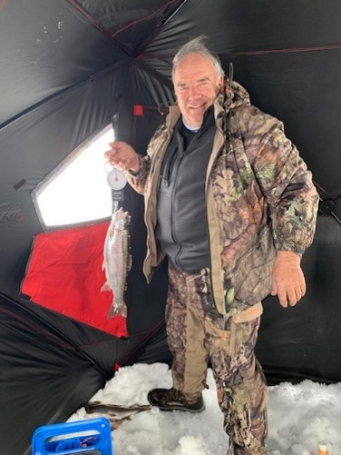

I don’t usually write about my ice fishing outings but this one was quite different. While it is still fresh in my mind I wanted to get some of the details down in this writing.
I had sent a text on Wednesday morning to my neighbor, Rod, with whom I often go ice fishing up at the Strawberry Reservoir, to see if he wanted to go the next day, which was Thursday, January 28, 2021. He replied fairly late that evening that he was “a go”. We decided to leave at our regular time of 6:30am the next morning. It was pretty windy the entire night and was still blowing that morning when we left Salem. The weather report had mentioned that there would not be any wind at the reservoir until later in the afternoon and that it would be warmer.
As we drove out of Heber up the canyon towards the summit, it appeared ahead of us that it could be snowing in the canyon. It was snowing and as we approached the summit the roads were mostly covered with snow and the going was pretty slow. We were already thinking that maybe this trip was not such a good idea. However, we continued to our destination at the East Chicken Creek parking lot and parked the truck. The weather was bad. The snow continued to fall and the windy conditions really made us think again about abandoning this effort. We didn’t.
So we pulled on our warm clothes, unloaded our sleds from the back of the truck and tied the snow huts to our sleds and set out across the ice. There was only one other fisherman on the ice at this time and we kind of headed in his direction. We probably walked a little less than a half a mile. However, the walking was pretty tough as there was about 6 inches of snow and with each step we broke through and created what we call a “post hole”. As we approached the lone fisherman he began yelling something at us but because of the wind blowing so hard and the snow if was hard to hear what he was yelling. We finally figured out that he just did not want us to stop close to his area. He was obnoxious. Anyway, we veered off to our right about another 50 yards and decided to stop, drill a hole to check the depth, and put up the larger snow hut.
This is when the outing got really weird. We unloaded the snow hut and started to unfold the spring loaded sides and top getting ready to stake it down with the ice screws. The wind is still blowing and it is still snowing. Rod and I both let go of the ice hut to reach for the ice screws and in the next instant the snow hut went bouncing across the lake like a beach ball. We could only stare with our mouths wide open and watch the snow hut continue to bounce away from us in the wind. It can only be an estimate but it appeared that the hut finally came to a stop a couple of football field lengths from where we were standing. We left our sleds with all our gear and started toward the snow hut which by this time had stopped right side up and was basically saying “I’m ready for the ice screws”.
It took quite a bit of time and effort to finally reach the spot where the snow hut had stopped. We had to collapse the hut in order to carry it back to where we had left our sleds and our other gear. After walking back about 50 feet we decided to just fish in the area where the tent had stopped. So we left the collapsed hut in the snow and drudged back to our other gear and pulled our sleds to our new area to fish. We were probably about 100 yards from the shore at this point. We drilled our first ice hole to check the depth of the water and found it was only 14 feet deep. We had never fished in water this shallow before but we were so tired and sweaty from our exertion that we decided to stay at that location. We put the snow hut up again making sure to hold it while we inserted the ice screws and loaded most of our gear inside the hut. I drilled two holes inside the hut and we finally were able to sit down in our camp chairs and start fishing.
What happened over the next several hours was the next point of weirdness in this day of ice fishing at the Strawberry Reservoir. I caught the first two fish of the day within about the next 45 minutes. The first fish was the usual Cutthroat trout that we often catch here. However, the second fish was a nice Rainbow trout and Rod and I looked at each other pretty amazed. I decided to keep this particular fish to take home and let Judy enjoy a nice trout dinner. Rod then proceeded to catch the next 6 fish. Five of them were Rainbow trout and the other a Cutthroat. I caught the last fish of the day and it was another Rainbow. In the three years that Rod and I have been ice fishing together we have never caught more than a single Rainbow trout. I elected to take four of the rainbow trout home and Judy decided to serve them up for Sunday dinner this weekend.
So if our day could have ended there with our great catch of rainbow trout we would have been very happy campers (fishermen). However, we were still out on the ice at least a half mile from the truck and the wind was blowing even harder than it had been early in the morning. The snow had stopped. We gingerly took down the snow hut making sure it was secured against the wind, loaded all out gear on our sleds, and took off for the truck. We were walking almost directly into the wind and it was really hard going. I learned from Rod later at the truck that he would count 35 steps and then stop and rest and then repeat. The half mile back to the truck seemed to take forever and we were two old men who were thoroughly exhausted.
The drive back to Heber and then Salem went without incident. We did treat ourselves to milkshakes at one of the local drive through restaurants.
We have already decided that we will try this spot again on our next ice fishing adventure but will make sure the snow hut does not become a kite.
